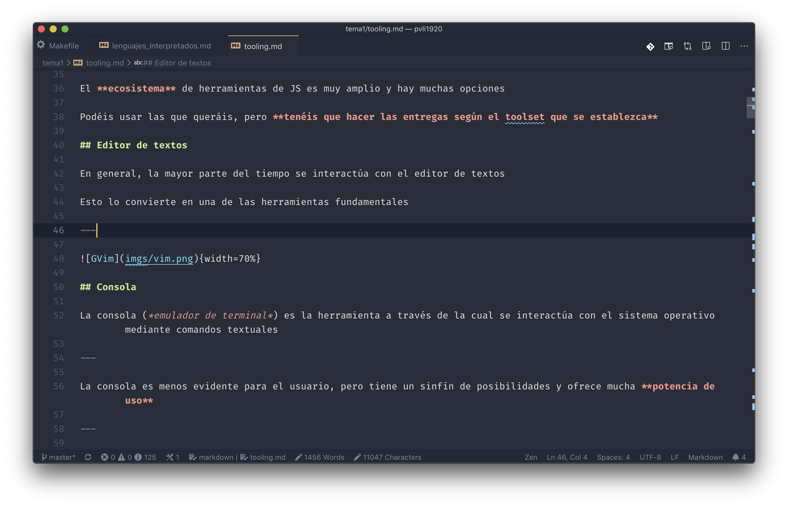
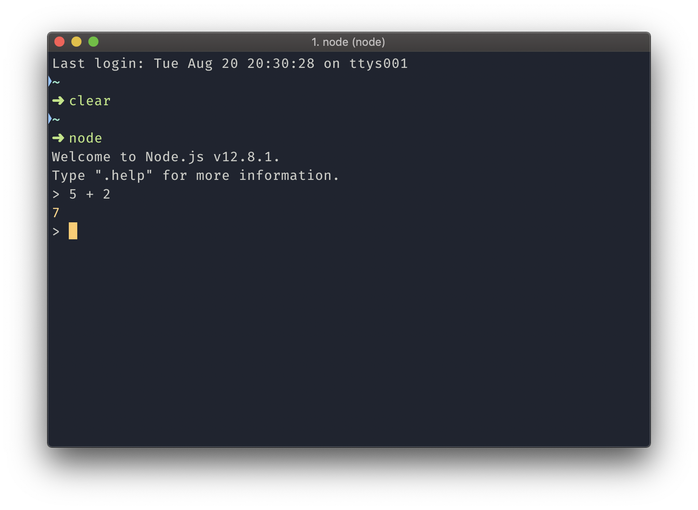
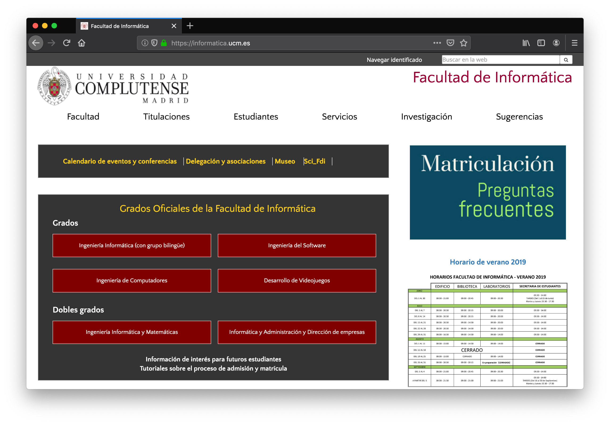
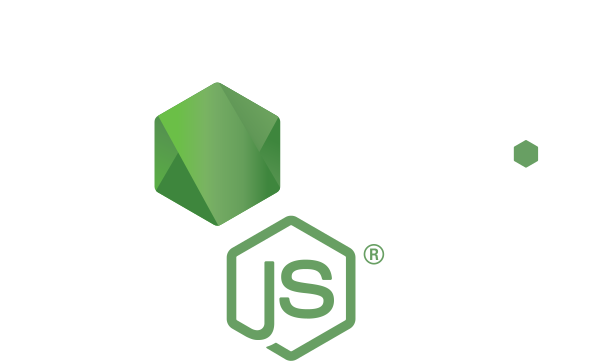
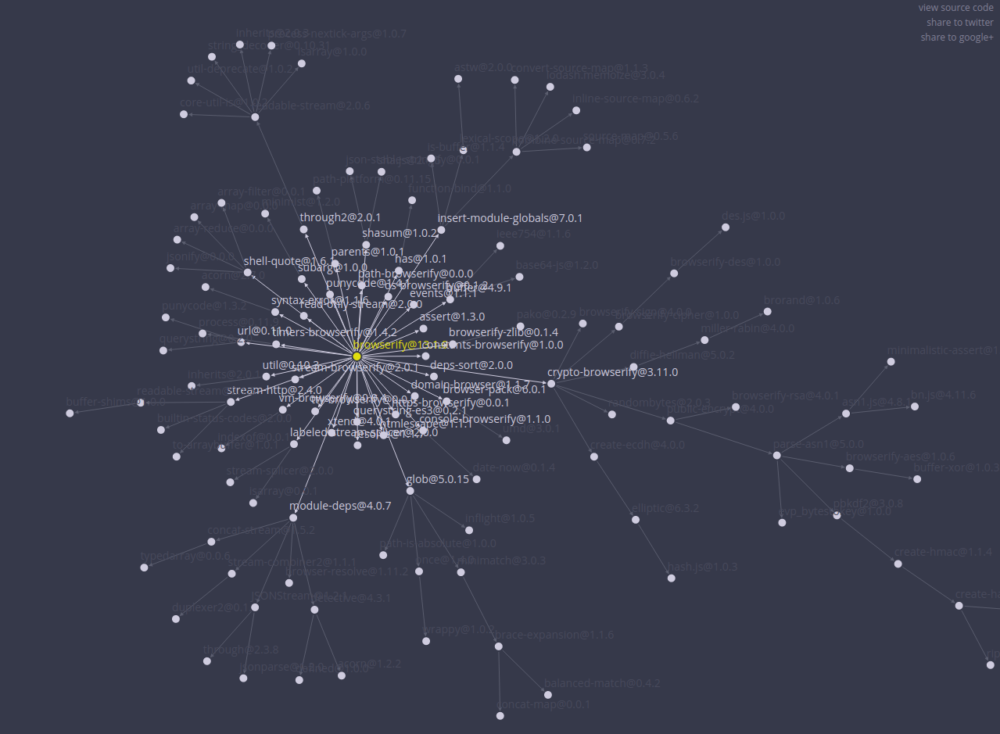
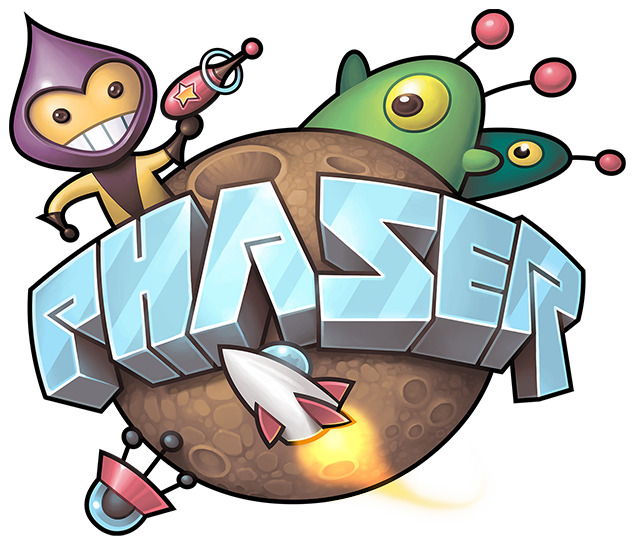

Herramientas
Carlos León
cleon@ucm.es
Las herramientas son importantes
No sólo escribimos
Escribir código no es todo lo que hacemos cuando programamos
También:
- gestionamos archivos
- gestionamos versiones
- hacemos publicaciones
- nos comunicamos con el resto del equipo
- compilamos/cargamos en el intérprete
- probamos
- depuramos
- …
Toolset JS
Existen entornos de desarrollo integrados (IDEs) que permiten trabajar en JavaScript
Nosotros no vamos a trabajar con ellos
El objetivo es aprender cómo funcionan cada una de las piezas
El ecosistema de herramientas de JS es muy amplio y hay muchas opciones
Podéis usar las que queráis, pero tenéis que hacer las entregas según el toolset que se establezca
Editor de textos
En general, la mayor parte del tiempo se interactúa con el editor de textos
Esto lo convierte en una de las herramientas fundamentales

Figura 1: VSCode
Consola
La consola (emulador de terminal) es la herramienta a través de la cual se interactúa con el sistema operativo mediante comandos textuales
La consola es menos evidente para el usuario, pero tiene un sinfín de posibilidades y ofrece mucha potencia de uso

Figura 2: iTerm2
Intérprete
El intérprete es el programa que recibe el código (en forma de archivo o de instrucciones separadas) y se encarga de ejecutarlo
Un navegador es un programa capaz de analizar archivos en HTML y mostrarlos como una página web.

Hoy en día, los navegadores más usados contienen un intérprete de JavaScript.
Además, los navegadores proveen al intérprete con un modelo del documento (DOM-Document Object Model), que es un API para acceder a una página web
Servidores web
Un servidor web es un programa de ordenador que, a través de la red, "escucha" peticiones según el protocolo HTTP y envía, como respuesta, páginas web
Librerías
Crear programas que ya han sido programados por otros es una pérdida de tiempo
Las librerías son fragmentos de código que quedan disponibles para el programador:
// usamos librerías para imprimir contenido
console.log("hola");
// o para mejorar nuestro estilo de código
_.map([1, 2, 3], function(num){ return num * 3; });
// o para acceder a frameworks completos
var gamePh2 = new Phaser.Game(800, 600,
Phaser.CANVAS,
'phaser-example',
{ create: create });
Gestión de versiones
Aparte de los programas muy pequeños, nadie escribe un programa, lo termina y no vuelve a tocarlo nunca
Siempre existen versiones de código
Las versiones de código, bien usadas, permiten:
- flexibilidad
- seguridad
- trabajo en grupo
- histórico y revisiones
- análisis de evolución
- aceptar contribuciones externas
- libertad de experimentación
Herramientas para este curso
Herramientas para desarrollar juegos en la web
Vamos a seguir estas ideas, usando herramientas profesionales
Editor de textos
Es importante (al menos muy útil) usar un editor profesional:
Características deseables
- Coloreado de sintaxis
- Indentación apropiada
- Ayudas a la edición:
- Completado de paréntesis
- Autocompletado de código
- Autocompletado semántico
Consola/Shell
La consola por defecto de Windows es muy pobre
Hay alternativas:
- Cmder
- Conemu
- iTerm2
- Casi cualquiera en GNU/Linux (GNOME Terminal, Konsole)
La shell es el programa que se ejecuta en la terminal (que es la ventana)
En fundamental diferenciar entre emulador de terminal (la "ventana") y el "shell", que es el programa que se ejecuta dentro de la ventana y que procesa nuestros comandos
Alternativas típicas para la shell
Intérprete
Las primeras semanas usaremos node.js, con la versión que haya instalada en los laboratorios

Figura 3: Node.js
Node.js incluye un gestor de paquetes, npm
Figura 4: npm
Un gestor de paquetes es una herramienta, generalmente con interfaz de terminal, que permite instalar librerías, gestionar dependencias entre ellas y lanzar aplicaciones con comandos simples
Así, no hace falta buscar una librería en Internet, encontrar la carpeta donde descargarla, probar la versión, ver que falla y tener que buscar la dependencia…
Los paquetes tienen dependencias. Por ejemplo, browserify

Figura 5: Ejemplo de dependencias de browserify
npm gestiona las dependencias por nosotros
Navegador
Usaremos Chrome/Chromium, con la versión que haya instalada en los laboratorios

Figura 6: Navegador Chrome
Servidores web
Es imprescindible que usemos un servidor para esta asignatura
Usaremos cualquier servidor http
Pero podemos no "instalar" ninguno y usar paquetes de Node para lanzar el servidor.
Para probar, podéis instalar http-server:
$ npm install http-server # para instalarlo (no es necesario)
$ npx http-server # para ejecutarlo
npm installlo descarga, crea una carpeta para instalarlo y lo instala en local junto con sus dependencias
npxlo ejecuta, pero además lo instala si no estaba instalado
También está live-server, que actualiza automáticamente el navegador cuando hay cambios:
$ npm install live-server # para instalarlo (no es necesario)
$ npx live-server # para ejecutarlo
Estos programas sirven sólo a partir del directorio en el que se ejecutan, nunca rutas por encima
$ pwd
/home/usuario/misarchivos
$ cd docs
$ npx live-server # `localhost` equivale a `docs/`
En el caso anterior, no puedo ir a una URL '../anterior.png' que esté en misarchivos
Si la versión de npm es menor que 5.2.0, habrá que instalar npx de forma manual (hace falta ser administrador):
$ npm install -g npx
También podemos arrancar un servidor web por defecto en Python:
$ python -m http.server
Serving HTTP on 0.0.0.0 port 8000 ...
Es decir, no es necesario
nodepara un servidor web
Librerías
Usaremos muchas, pero en general sólo veremos algunas (la mayoría serán dependencias)
Para los juegos usaremos Phaser

Figura 7: Phaser
Gestión de entregas
Las entregas del proyecto estarán disponibles en un repositorio git
Para entregar, hay que tener todo en un repositorio, según las condiciones de entrega (expuestas en el CV)
Git
Git es el sistema de control de versiones que usaremos para la asignatura
Gestión de proyecto
Trello, GitHub Project, Pivotal…
Cualquier herramienta vale, pero usaremos alguna variante de Scrum, y habrá que marcar:
- Costes de cada tarea/historia de usuario
- Responsable de cada tarea
- Estado de cada tarea